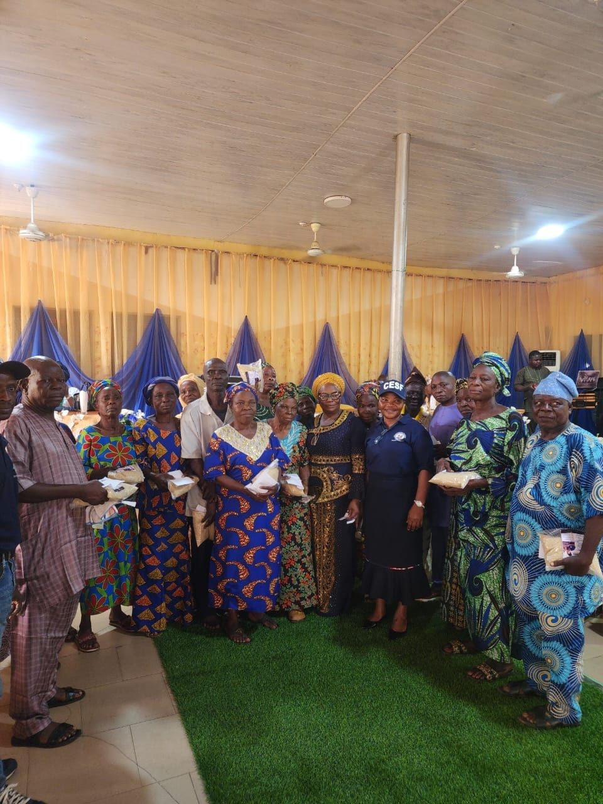
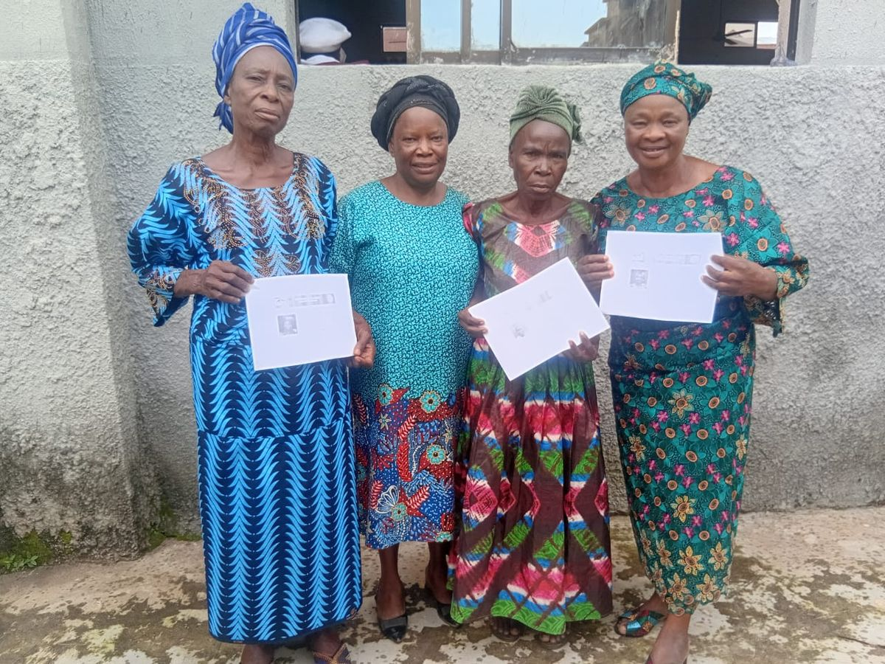

Our vision
To build a society where every older person is valued, respected, protected and supported to live a healthy, dignified and fulfilling life.
CareBridge Elders Support Foundation is a bridge of love, care, hope and dignity between our older persons and the society they have helped to build.

Our themeCaring for our Elders, Building a Better Society

CareBridge Elders Support Foundation was established out of a deep concern for the welfare, dignity and wellbeing of older persons in our society. We believe that growing older should not mean becoming forgotten, neglected or abandoned.
Every older person deserves love, respect, care, protection and the opportunity to live a meaningful and dignified life.
Ageing is a journey we all hope to experience. The care we give to older persons today is an investment in the society we shall all live in tomorrow.
To build a society where every older person is valued, respected, protected and supported to live a healthy, dignified and fulfilling life.
To provide compassionate care, support, advocacy, health education of the youth on how to care for those who once cared for them, social assistance to older persons, while promoting their dignity, wellbeing, inclusion and active participation in society.
These are the objectives our foundation was built on. Choose a topic to see the ones that matter most to you.
Showing all 10 objectives
Promote the dignity, rights and wellbeing of older persons.
Dignity and protectionProvide support and assistance to vulnerable, disadvantaged, neglected and less-privileged older persons.
Dignity and protectionPromote access to healthcare through health education, medical support, screening and referral services.
Health and wellbeingCreate awareness about healthy ageing, nutrition, disease prevention and mental and social wellbeing.
Health and wellbeingCombat neglect, abuse, exploitation and abandonment of older persons through advocacy and community awareness.
Dignity and protectionProvide emotional and social support to reduce loneliness and social isolation among older people.
ConnectionMobilize families, communities, government agencies, religious organizations and other stakeholders to participate in elderly care and support.
Partnerships and policyPromote intergenerational relationships, allowing younger people to learn from and appreciate the wisdom and experience of older persons, and to educate them on the importance of caring for those who once cared for them.
ConnectionAdvocate for policies and programmes that improve the quality of life and social protection of older persons.
Partnerships and policyEstablish partnerships and mobilize resources from individuals, organizations, government and development partners to advance the welfare of older persons.
Partnerships and policyCareBridge was officially launched in Akure under the theme “Caring for our Elders, Building a Better Society.” Elders, health workers, government representatives, religious and community leaders came together to begin.
State Epidemiologist, Ministry of Health, Akure
Director of Nursing Services, Ministry of Health, Akure
CEO, Autospareparts Int., Onyearubulem, Akure
Tap any photo to see it larger. Videos play right here.
We invite everyone to become part of this vision: families, communities, government agencies, religious organisations and friends.
Let us care, connect, support and restore dignity to our elders.
All: caring for those who once cared for us!
We would love to hear from you, whether you are an elder, a family member, a volunteer or a partner.
CareBridge is more than a foundation. Together, let us care, connect, support and restore dignity to our elders.
Make it easier to read